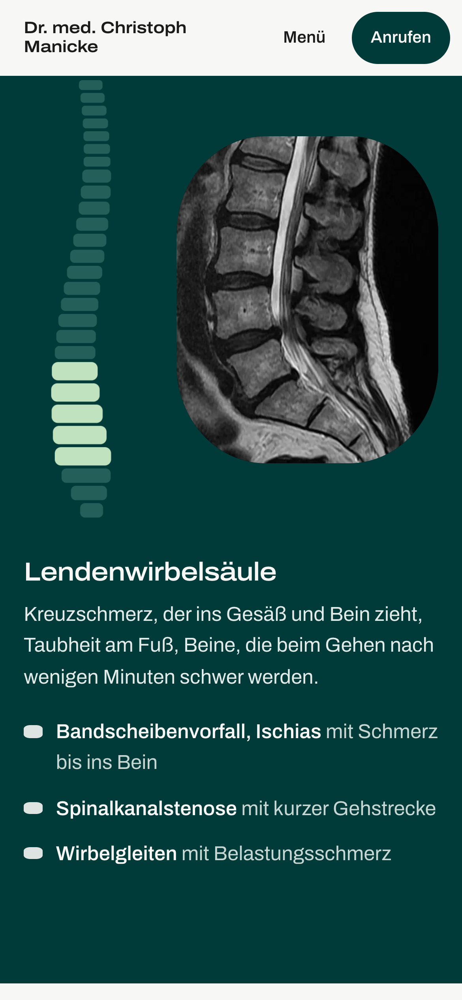

Dr. med. Christoph Manicke
Neurochirurgie mit Schwerpunkt Wirbelsäule, Kiel · Website, Version 3
Dr. med. Christoph Manicke · Neurochirurgie Kiel

„Erst verstehen, dann entscheiden.“
Kieler Papier
Fördetief
Salbei
Mint